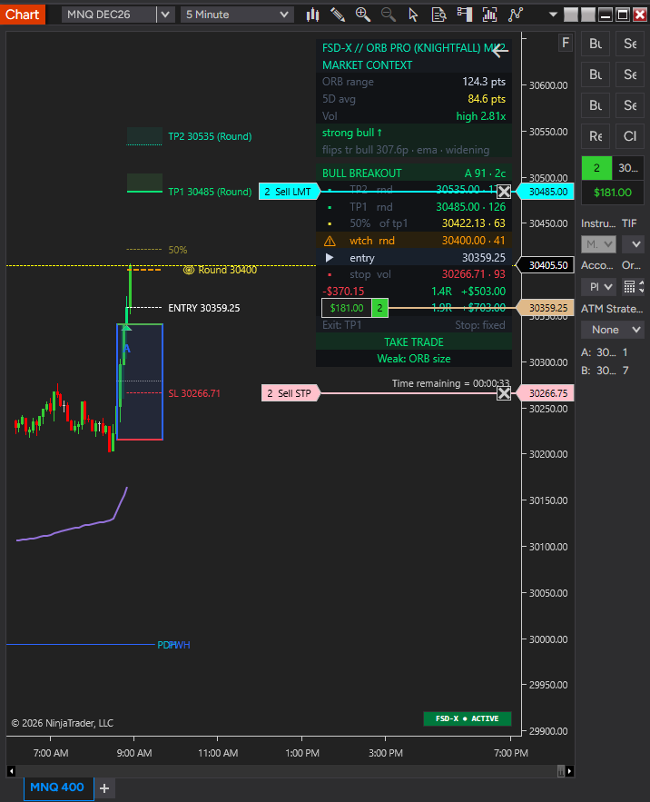

Knightfall is coming
to NinjaTrader.
Native. All in one.
The same graded ORB engine, rebuilt as a native NinjaTrader 8 strategy. Let it trade hands-free, or trade it yourself off the same chart. One script.
No webhooks. No alert setup. No third-party bridge between your chart and your account.
It's built and submitted to NinjaTrader for review. There's no release date until it's approved — the Discord hears first.
Knightfall on TradingView is live today. See the membership →

Everything in one place.
On TradingView, hands-free trading means a paid plan for webhooks, alert setup, and a bridge service to reach your broker. On NinjaTrader, the strategy lives on the platform that places the order.
One strategy, two ways to run it. Let it take and manage the trade, or keep the read and click the trade yourself.
Orders go from NinjaTrader to the account you connect. No webhook, no alert message, no service in the middle to pay for or break.
Stop and target sit on the chart as working orders. You see exactly what's live at your account, right next to the setup.
The Knightfall read you know: every breakout graded, ORB size checked against its 5-day average, stops and targets placed by the same rules.
The dashboard shows what's at risk and the R to each target before you're in — sized to the risk setting you choose.
One platform for charting, the read and execution. Less to set up, less to monitor, fewer places for something to go wrong.
The whole read. One panel.
The Market Context panel carries over from TradingView, rebuilt for NinjaTrader. Top to bottom, it answers the questions you'd otherwise be asking yourself at 8:45.
Today's ORB range against the 5-day average, volume, and the trend read. Is this a morning worth trading?
Breakout direction, letter grade and score. The grade sets the size.
Entry, stop, TP1, TP2, the 50% mark and watch levels — each tagged with its source, like a round number or volatility.
Take the trade or skip it, with any weak spots called out so you know what you're signing up for.
Built. Now in review.
Third-party NinjaTrader add-ons go through NinjaTrader's review before they ship. That's where Knightfall is right now. We won't guess at a date — when it's approved, members hear it first in the Discord.
-
✓
Built for NinjaTrader 8
Strategy, dashboard and on-chart orders.
-
✓
Running on sim
Hands-free and manual modes on a NinjaTrader sim account.
-
Submitted to NinjaTrader — in review
We're here now.
-
Approval
Release date set once this clears.
-
Launch to members
Setup guide and walkthrough on day one.
What we can tell you now.
When does it launch?+
No date yet. It's waiting on NinjaTrader's review. We'll announce it in the Discord and on our socials as soon as it's approved.
Will it be part of the membership?+
That's the plan — it's built as part of the FSD-X package, like everything else. Final details come with the launch announcement.
Do I need TradingView or a bridge service for it?+
No. It runs inside NinjaTrader 8 and places orders through the account you connect there. No webhooks, alerts or third-party automation service.
Can I use it on prop firm accounts?+
If your firm lets you connect through NinjaTrader and allows automated trading. Rules vary by firm — check yours before running it hands-free. Manual mode is always an option.
What do I do until then?+
Knightfall and the Auto-Trader are live on TradingView now. Join the Discord to follow the NinjaTrader launch.
Be there when it drops.
Launch news hits the Discord first, then our socials.
Free to join. Announcements, previews and the launch.
Setup videos and the NinjaTrader walkthrough at launch.
Screenshots and short clips as it gets closer.
Quick status updates and launch day.